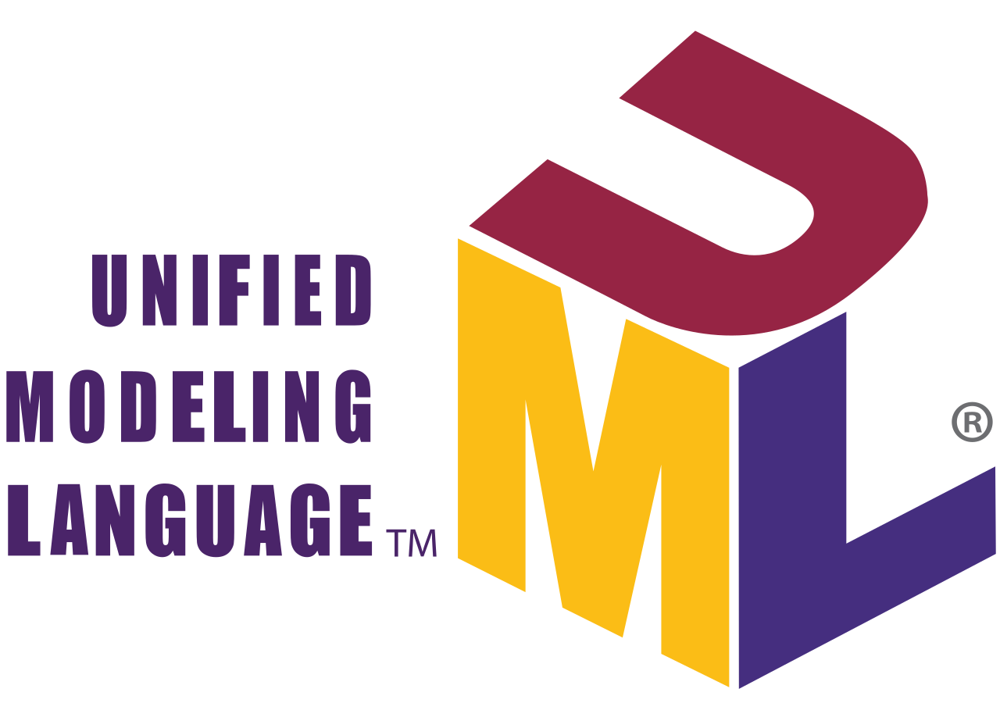

Ewen THÉPOT
Développeur Informatique | Recherche Alternance (Sept 2025 - Juil 2027)
Étudiant en BUT Informatique à Lannion, passionné par l'innovation et le développement d'applications utiles au quotidien.
Télécharger mon CV (PDF)À Propos de Moi
Actuellement étudiant en Bachelor Universitaire de Technologie (BUT) Informatique à l'IUT de Lannion, je suis à la recherche d'une alternance de deux ans (rythme 3 semaines / 3 semaines) à partir de septembre 2025. Mon objectif est de mettre en pratique mes compétences et d'en acquérir de nouvelles au sein d'une équipe dynamique, en contribuant au développement d'applications logicielles innovantes qui améliorent la vie quotidienne.
Mes Qualités :
- Adaptabilité
- Ponctualité
- Esprit d'équipe
- Autonomie
- Curiosité
Mes Compétences de BUT Informatique
Développer des applications informatiques simples
Concevoir, coder, tester et intégrer une solution informatique adaptée aux besoins d’un client.
Traces et preuves :
- Projet Jeu Snake en C : Développement d'une application complète en C.
- Projet Application EllaDanse : Développement d'une application avec interface graphique.
Appréhender et construire des algorithmes
Proposer des solutions performantes en termes de temps, précision et ressources.
Traces et preuves :
- Projet d'automatisation du jeu Snake en C : Automatisation et optimisation de la prise de décision.
Installer et configurer un poste de travail
Installer, configurer, sécuriser et maintenir des systèmes, services ou réseaux informatiques.
Traces et preuves :
- Projet Chaîne de traitement de fichiers : Utilisation de Docker pour créer et gérer un environnement isolé et communicant.
Concevoir et mettre en place une base de données à partir d’un cahier des charges client
Exploiter les données de manière responsable pour soutenir le pilotage stratégique de l’entreprise.
Traces et preuves :
- Projet Conception BDD - Championnats : Modélisation (UML), création de schéma, et manipulation (Tutorial D) d'une base de données relationnelle.
Identifier les besoins métiers des clients et des utilisateurs
Piloter un projet informatique en tenant compte des utilisateurs, des contraintes et de la valeur ajoutée.
Traces et preuves :
- Projet Site Web - JO Paris : Projet réalisé en équipe avec identification des besoins, maquettage (Figma), et répartition des tâches.
Identifier ses aptitudes pour travailler dans une équipe
Travailler efficacement au sein d’une équipe informatique en valorisant les compétences collectives.
Traces et preuves :
- Projet Site Web - JO Paris : Collaboration en équipe pour la conception et le développement du site.
- Expérience professionnelle chez Intermarché : Travail d'équipe quotidien, coordination avec les collègues, et adaptation aux différents services.
Stack Technique
Technologies Web
 HTML 5
HTML 5 CSS 3
CSS 3- JavaScript
Programmation
 C
C Python
Python Java
Java
Systèmes & Outils
- BASH
 PHP
PHP Docker
Docker
Bases de Données
 SQL
SQL- Tutorial D (avec Rel)
-  UML (Visual Paradigm)
Gestion de Projet & Conception
 Git
Git Trello
Trello Maquettage (Figma)
Maquettage (Figma)
Langues
 Anglais B2 (Aisance
orale/écrite, technique)
Anglais B2 (Aisance
orale/écrite, technique) Espagnol B1
(Maîtrise orale/écrite)
Espagnol B1
(Maîtrise orale/écrite)
Mes Projets
Jeu Snake en C
Développement d'une version du jeu Snake classique en langage C, exécutable dans un terminal.
Snake Autonome en C
Développement d'une version autonome du jeu Snake avec algorithme de prise de décision en temps réel pour optimiser le chemin vers la nourriture.
Chaîne de traitement de fichiers
Automatisation du traitement de fichiers via des scripts Bash et PHP dans un environnement Docker.
Conception BDD - Championnats
Modélisation UML et création d'une base de données pour la gestion de championnats sportifs.
Site Web - JO Paris
Maquettage et développement front-end d'un site web pour présenter les Jeux Olympiques.
Application - EllaDanse
Conception et développement d'une partie d'une application de gestion d'une association.
Site web - Portfolio
Conception et développement complet de ce site web portfolio. Intégration d'un formulaire de contact fonctionnel et optimisation pour une expérience utilisateur moderne et professionnelle.
Expérience Professionnelle
-
Employé Polyvalent
Intermarché Hyper, Rostrenen (22)
Juillet 2024 - Avril 2025
Missions : Tenue de caisse, mise en rayon, service en charcuterie.
Acquis : Professionnalisme, aisance relationnelle client, travail d'équipe, autonomie, gestion du temps et du stress.
Formation
-
Bachelor Universitaire de Technologie (BUT) - Informatique
IUT de Lannion (22)
2024 - 2027 (en cours)
Parcours : Réalisation d'applications : conception, développement, validation.
-
Baccalauréat Général
Lycée Polyvalent Paul Sérusier, Carhaix-Plougüer (29)
2021 - 2024
Spécialités : Mathématiques, Numérique et Sciences Informatiques (NSI).
Contact
Intéressé par mon profil ? N'hésitez pas à me contacter !
- Email : thepotewen@gmail.com
- Téléphone : +33 6 35 26 13 67
- LinkedIn : Ewen Thépot
- Github : Ethepot